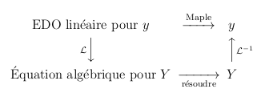

Transformations de Laplace
Nous présentons une très courte introduction aux transformations de Laplace avec Maple. En particulier, nous expliquons comment les utiliser pour résoudre des EDO linéaires avec des coefficients constants.
La transformée de Laplace
La transformée de Laplace d'un fonction \(f\) est la fonction \(F\) définie par
\[ F(s) = \mathcal{L}(f)(s) = \int_0^\infty f(t) e^{-s t} \text{d} t \]pour les valeurs de \(s\) où l'intégrale converge. Maple peut calculer les transformées de Laplace pour nous. Nous devons inclure la librairie des transformations par intégrales inttrans à notre session sur Maple.
> with(inttrans):
La transformée de Laplace de la fonction \(f\) définie par \(\displaystyle f(t) = e^{-3 t}\sin(5 t)\) est calculée de la façon suivante.
> ft := exp(-3*t)*sin(5*t); Fs:=laplace(ft,t,s);\[ \begin{split} & ft := e^{-3t} \sin(5t) \\ & Fs := \frac{5}{(s+3)^2 + 25} \end{split} \]
La transformée inverse de Laplace d'une fonction \(F\) est
une fonction \(f\) telle que \(\mathcal{L}(f)(s) = F(s)\)
pour tous
\(s\) dans le domaine de \(F\). Nous
écrivons \(\displaystyle \mathcal{L}^{-1}(F) = f\). Il existe une formule
intégrale pour calculer la transformée inverse de Laplace d'une
fonction mais nous pouvons procéder sans cette formule dans cette
introduction.
La transformée inverse de Laplace de la fonction \(H\) définie par \(\displaystyle H(s) = \frac{1}{s^2-4}\) est calculée de la façon suivante.
> Hs := 1/(s^2-4); ht:=invlaplace(Hs,s,t);\[ \begin{split} &Hs := \frac{1}{s^2-4} \\ &ht := \frac{\text{sinh}(2 t)}{2} \end{split} \]
La fonction de Heaviside Function est définie par
\[ H(t) = \begin{cases} 1 & \text{ si } t \geq 0 \\ 0 & \text{ si } t < 0 \end{cases} \]Cette fonction est dénotée Heaviside() dans Maple. La transformée de Laplace de cette fonction est donnée ci-dessous.
> laplace(Heaviside(t),t,s);\[ \frac{1}{s} \]
Il est fréquent d'avoir à décaler la fonction de Heaviside de telle sorte que le saut soit à un autre point qu'à l'origine..
> H4t := t->Heaviside(t-4); H4s := laplace(H4t(t),t,s);\[ \begin{split} & H4t := t \mapsto \mathrm{Heaviside}(t - 4) \\ & H4s := \frac{e^{-4s}}{s} \end{split} \]
La fonction de Heaviside a certaines propriétés intéressantes. Par exemple, \(\mathcal{L}( t \mapsto H(t-a) f(t-a) )(s) = e^{-a s} F(s)\) où \(F = \mathcal{L}(f)\).
La fonction Delta de Dirac est définie
par
\(\delta(t) = 0\) pour \(t \neq 0\) et
\(\displaystyle \int_{-a}^a f(t) \delta(t) \text{d}t = f(0)\) pour
toutes fonctions \(f\) et valeurs \(a > 0\). Le lecteur peut
apprendre dans un cours sur la théorie de la mesure qu'en fait la
fonction Delta de Dirac n'est pas une fonction. Nous n'élaborons pas
sur ce sujet fascinant. La fonction Delta de Dirac est dénotée
Dirac() dans Maple. Il découle
de sa définition que la transformée de Laplace de la fonction Delta de
Dirac est la fonction donnée ci-dessous.
> laplace(Dirac(t),t,s);\[ 1 \]
Résolution d'EDO avec les transformations de Laplace
Supposons que nous voulions résoudre l'EDO
\[ y^{(n)}(t) + a_{n-1} y^{(n-1)}(t) + \ldots a_1 y''(t) + a_1 y(t) = f(t) \]avec les condition initiales \(y(0)=y_0, y'(0)=y_1, \ldots, y^{(n-1)}(0) = y_{n-1}\). La méthode qui utilise les transformations de Laplace pour résoudre les EDO linéaires avec coefficients constants est simple. Nous calculons la transformée de Laplace des deux côtés de l'EDO pour obtenir une équation algébrique en fonction de \(Y = \mathcal{L}(y)\). Nous résolvons cette équation algébrique en fonction de \(Y\). Finalement, nous calculons la transformée inverse de Laplace de \(Y\) pour obtenir la solution \(y\) de l'EDO avec les conditions initiales. Le diagramme commutatif suivant résume la procédure pour résoudre les EDO linéaires avec les transformations de Laplace.

L'EDO est transformée en une équation algébrique (aucune dérivée) car les transformations de Laplace éliminent les dérivées. En fait, \(\mathcal{L}(y')(s) = s Y(s)- y(0)\), \(\mathcal{L}(y'')(s) = s^2 Y(s) - s y(0) -y'(0)\) et en général
\[ \mathcal{L}(y^{n})(s) = s^n Y(s) - s^{(n-1)} y(0) -s^{(n-2)} y'(0)- \ldots - y^{(n-1)}(0) \]Ces formules peuvent être démontrées à l'aide d'intégrations par parties.
Exemple: Considérons l'EDO \(y''(t) + 4 y(t) = \cos(2t)\) définie par la commande suivante dans Maple.
> eq1 := diff(y(t),t$2) + 4*y(t)= cos(2*t);\[ eq1 := \frac{\text{d}^2}{\text{d}t^2} y(t) + 4 y(t) = \cos(2t) \]
avec les conditions initiales \(y(0)=2\) et \(y'(0)=3\). Si nous utilisons la procédure pour résoudre les EDO à l'aide des transformations de Laplace, alors nous exécutons les opérations suivantes.
> eq2 := laplace(eq1,t,s);
Ys:=solve(eq2,laplace(y(t),t,s));
yt := invlaplace(Ys,s,t);
yt := subs({y(0)=2,D(y)(0)=3},yt);
\[
\begin{split}
& eq2 := s^2\,\mathrm{laplace}(y(t),t,s) -D(y)(0) - s y(0)
+4\,\mathrm{laplace} (y(t),t,s) = \frac{s}{s^2 + 4} \\
& Ys := \frac{ y(0) s^3+ 4 s y(0) + D(y)(0) s^2 + 4 D(y)(0)+s}{ (s^2 + 4)^2} \\
& yt := y(0)\, \cos(2 t) + \frac{\sin(2t) (t + 2*D(y)(0))}{4}\\
& yt := 2 \cos(2 t) + \frac{\sin(2 t) (t + 6)}{4}
\end{split}
\]
Note: La version graphique de Maple peut afficher
\(\mathcal{L}\) au lieu de laplace
. Cependant, il faut
écrire laplace
dans les commandes.
Tout le travail fait pour résoudre l'EDO linéaire avec les conditions initiales de l'exemple précédent peut être fait par une seule commande de Maple.
> dsolve({eq1,y(0)=2,D(y)(0)=3},y(t),method=laplace);
\[
y(t) = 2 \cos(2 t) + \frac{\sin(2t)(t + 6)}{4}
\]
Applications
Les transformations de Laplace sont souvent utilisées pour l'étude des circuits électriques. Considérons le circuit LRC suivant.

La constante \(R\) est la résistance (en ohms) du résisteur, \(L\) est l'inductance (en henrys) de l'inducteur, et \(C\) est la capacité (en farads) du condensateur. La valeur \(v_s(t)\) est la force du voltage (en volts) à la source au temps \(t\). D'après la première lois de Kirchoff \(v_s + Ri = v_C + v_L\) où \(v_C\) est le voltage au condensateur, \(v_L\) est le voltage à l'inducteur, et \(i\) est le courant (en ampères). Le circuit LRC est décrit par l'EDO suivante.
> eq3 := L*C*diff(v(t),t$2) + R*C*diff(v(t),t) + v(t)=VS(t);\[ eq3 := L C \left( \frac{\text{d}^2}{\text{d}t^2} v(t)\right) + R C \left( \frac{\text{d}}{\text{d}t} v(t)\right) + v(t) = VS(t) \]
La valeur v(t) est le voltage dans le circuit au temps \(t\) et VS représente dans Maple la fonction \(v_s\).
Supposons que R=2 ohms, C=0.15 farads, L=2 henrys et VS(t) = Dirac(t).
> eq4 := subs({R=2, C=0.15, L=2, VS(t)=Dirac(t)},eq3);
\[
eq4 := 0.30 \frac{\text{d}^2}{\text{d}t^2} v(t) + 0.30 \frac{\text{d}}{\text{d}t} v(t) + v(t) = Dirac(t)
\]
Si les conditions initiales sont v(0)=1 and D(v)(0)=0, alors nous obtenons la solution suivante.
> dsolve({eq4, v(0) = 1, (D(v))(0) = 0}, v(t), method = laplace);
\[
v(t) = \frac{e^{-\frac{t}{2}} \left( 111\cos\left(\frac{\sqrt{111} t}{6}\right) + 23 \sqrt{111} \sin\left(\frac{\sqrt{111} t}{6}\right)\right)}{111}
\]
Le graphe du voltage v en fonction de temps est tracé ci-dessous.
> plot(rhs(%), t = 0 .. 20);